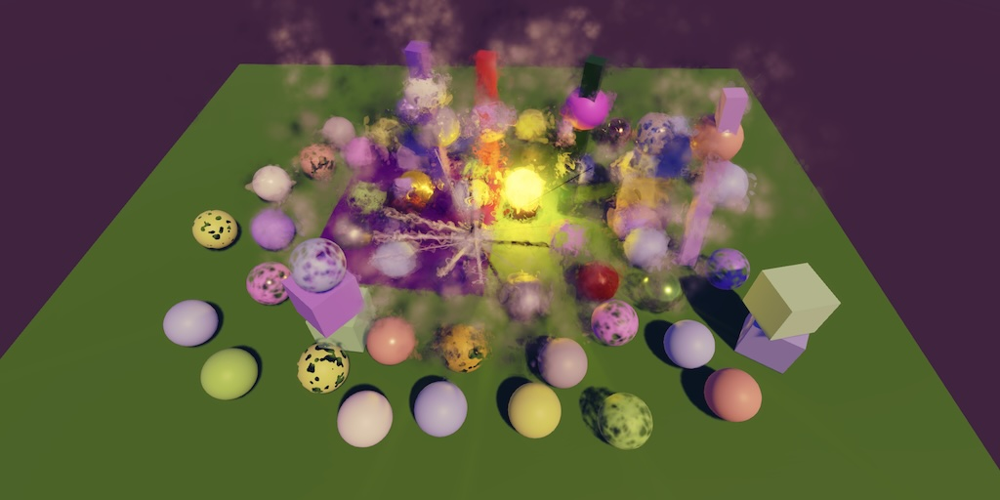
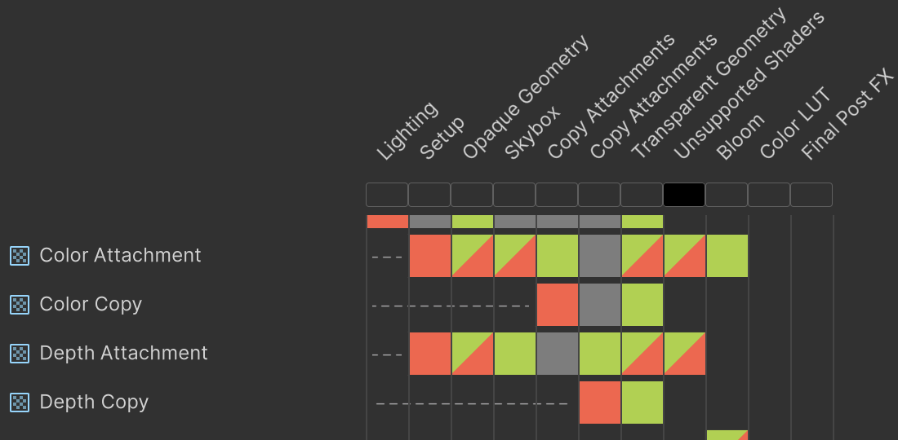

Custom SRP 5.1.0
Raster Render Passes

This tutorial is made with Unity 6000.1.12f1 and follows Custom SRP 5.0.0.
Stricter Render Passes
We previously changed all our passes into unsafe passes so our RP works with the newer RenderGraph API. This time we're going to restricts a few of our passes even further, changing them into raster render passes. Although we won't take advantage of it yet, this will unlock potential render graph optimizations in the future.
Raster render passes are restricted in a way that Unity can more optimally schedule and merge them. It also allows for optimizations for tile-based GPUs when it can take advantage of on-tile memory and frame-buffer fetches. This does require things to be handled a bit differently, which we will discover as we change the passes.
Skybox Pass
Once again we'll start with SkyboxPass, as it's one of the simplest passes. A raster render pass works with a RasterGraphContext instead of an UnsafeGraphContext. So we have to change the context type passed to the Render method.
void Render(RasterGraphContext context)
{
context.cmd.DrawRendererList(list);
}
And in the Record method we have to replace AddUnsafePass with AddRasterRenderPass. This will give us an IRasterRenderGraphBuilder.
using IRasterRenderGraphBuilder builder = renderGraph.AddRasterRenderPass( sampler.name, out SkyboxPass pass, sampler);
We now have to make explicit which attachments we render to. Instead of passing the color attachment texture to the generic UseTexture method we have to pass it to SetRenderAttachment. This method requires us to specify an attachment index, in case multiple render targets are used. As we only have one target the index is zero.
builder.SetRenderAttachment( textures.colorAttachment, 0, AccessFlags.ReadWrite);
The same goes for the depth attachment, passing it to SetRenderAttachmentDepth instead. As there is always only a single depth buffer this method has no index parameter. Its default access type is set to write, but the skybox doesn't write depth so we set it to read only.
builder.SetRenderAttachmentDepth( textures.depthAttachment, AccessFlags.Read);
Geometry and Unsupported Shaders Passes
Make the same changes to GeometryPass. This pass both reads and writes to both attachments.
void Render(RasterGraphContext context)
{
context.cmd.DrawRendererList(list);
}
public static void Record(…)
{
ProfilingSampler sampler = opaque ? samplerOpaque : samplerTransparent;
using IRasterRenderGraphBuilder builder =
renderGraph.AddRasterRenderPass(
sampler.name, out GeometryPass pass, sampler);
…
builder.UseRendererList(pass.list);
builder.SetRenderAttachment(
textures.colorAttachment, 0, AccessFlags.ReadWrite);
builder.SetRenderAttachmentDepth(
textures.depthAttachment, AccessFlags.ReadWrite);
Change UnsupportedShadersPass in the same way.
Copy Attachments Pass
We're also going to change CopyAttachmentsPass. This will require more work as we're hitting the limitations of what's allowed for raster render passes.
First, we need a new version of CameraRendererCopier.Copy that works with a RasterCommandBuffer instead of an UnsafeCommandBuffer. Duplicate the method and change the new method's buffer type as needed. Also, raster render passes take care of setting the render target for us and we are not allowed to do this ourselves. So remove the invocation of SetRenderTarget. This means that we can also remove the to parameter. I only show the changes to the copied method.
public readonly void Copy( RasterCommandBuffer buffer, TextureHandle from,//TextureHandle to,bool isDepth) { buffer.SetGlobalFloat(srcBlendID, 1f); buffer.SetGlobalFloat(dstBlendID, 0f); buffer.SetGlobalTexture(sourceTextureID, from);//buffer.SetRenderTarget(…);buffer.SetViewport(camera.pixelRect); buffer.DrawProcedural( Matrix4x4.identity, material, isDepth ? 1 : 0, MeshTopology.Triangles, 3); }
As the render target is set implicitly we can no longer switch targets in a single pass. So we're going to split CopyAttachmentsPass. The pass will now only make a single copy, either color or depth, which does simplify it a bit.
Begin by replacing all its texture handle fields with a single source handle. Also replace the boolean color and depth fields with a single isDepth field.
bool isDepth; CameraRendererCopier copier; TextureHandle source;
The Render method now only has to invoke the new copy method.
void Render(RasterGraphContext context)
{
copier.Copy(context.cmd, source, isDepth);
}
To set things up correctly, duplicate the Record method and make it private. Replace its two boolean parameters with a single isDepth parameter. Change it to create a raster render pass. Then remove all code that sets up the specifics for copying color and depth, until allowPassCulling is invoked. I only show the changes made to the duplicated method.
//publicstatic void Record( RenderGraph renderGraph,//bool copyColor,//bool copyDepth,bool isDepth, CameraRendererCopier copier, in CameraRendererTextures textures) { using IRasterRenderGraphBuilder builder = renderGraph.AddRasterRenderPass( sampler.name, out CopyAttachmentsPass pass, sampler);//pass.copyColor = copyColor;//pass.copyDepth = copyDepth;pass.isDepth = isDepth; pass.copier = copier;//…builder.AllowPassCulling(true); builder.SetRenderFunc<CopyAttachmentsPass>( static (pass, context) => pass.Render(context)); }
The new way of doing things will be to set the pass source, the render target handle, and the target's shader property ID based on isDepth. We also invoke either SetRenderAttachment or SetRenderAttachmentDepth as appropriate. We end with invoking UseTexture for the source.
pass.isDepth = isDepth;
pass.copier = copier;
TextureHandle target;
int targetId;
if (isDepth)
{
pass.source = textures.depthAttachment;
target = textures.depthCopy;
targetId = depthCopyID;
builder.SetRenderAttachmentDepth(target, AccessFlags.WriteAll);
}
else
{
pass.source = textures.colorAttachment;
target = textures.colorCopy;
targetId = colorCopyID;
builder.SetRenderAttachment(target, 0, AccessFlags.WriteAll);
}
builder.UseTexture(pass.source);
builder.AllowPassCulling(true);
It is not allowed to set the current attachment as a global texture inside the pass. This is to prevent accidentally trying to read the target texture while it is being rendered to. But we can instruct the pass to set it globally after we are finished rendering to it, by invoking SetGlobalTextureAfterPass on the builder, passing it the target's handle and ID.
builder.UseTexture(pass.source); builder.SetGlobalTextureAfterPass(target, targetId); builder.AllowPassCulling(true);
The last thing that we have to do is explicitly allow our pass to modify the global state, which is disallowed by default to make dependency management easier. We have to allow it because our copier sets global shader properties. This is done by invoking AllowGlobalStateModification(true) on the builder. We'll improve this in the future so it will no longer be needed.
builder.SetGlobalTextureAfterPass(target, targetId); builder.AllowGlobalStateModification(true);
Finally, we hide that we split the pass by making the public Record method invoke the private method when appropriate, either once or twice.
public static void Record(
RenderGraph renderGraph,
bool copyColor,
bool copyDepth,
CameraRendererCopier copier,
in CameraRendererTextures textures)
{
if (copyColor)
{
Record(renderGraph, false, copier, textures);
}
if (copyDepth)
{
Record(renderGraph, true, copier, textures);
}
}
If both color and depth need to be copied we'll now see two instances of the copy attachments pass appear in the render graph viewer.

This covers the conversion of the regular drawing passes. In the next part we'll support enabling native render passes, which is Custom SRP 6.0.0